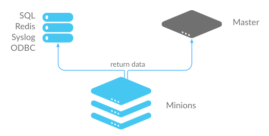
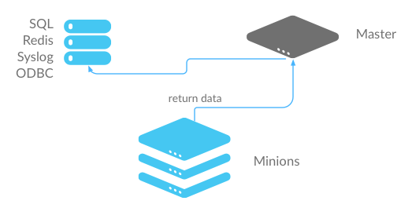

Storing Job Results in an External System¶
After a job executes, job results are returned to the Salt Master by each Salt Minion. These results are stored in the Default Job Cache.
In addition to the Default Job Cache, Salt provides two additional mechanisms to send job results to other systems (databases, local syslog, and others):
- External Job Cache
- Master Job Cache
The major difference between these two mechanism is from where results are returned (from the Salt Master or Salt Minion).
External Job Cache - Minion-Side Returner¶
When an External Job Cache is configured, data is returned to the Default Job Cache on the Salt Master like usual, and then results are also sent to an External Job Cache using a Salt returner module running on the Salt Minion.
- Advantages: Data is stored without placing additional load on the Salt Master.
- Disadvantages: Each Salt Minion connects to the external job cache, which can result in a large number of connections. Also requires additional configuration to get returner module settings on all Salt Minions.
Master Job Cache - Master-Side Returner¶
2014.7.0 新版功能.
Instead of configuring an External Job Cache on each Salt Minion, you can configure the Master Job Cache to send job results from the Salt Master instead. In this configuration, Salt Minions send data to the Default Job Cache as usual, and then the Salt Master sends the data to the external system using a Salt returner module running on the Salt Master.
- Advantages: A single connection is required to the external system. This is preferred for databases and similar systems.
- Disadvantages: Places additional load on your Salt Master.
Configure an External or Master Job Cache¶
Step 1: Understand Salt Returners¶
Before you configure a job cache, it is essential to understand Salt returner modules ("returners"). Returners are pluggable Salt Modules that take the data returned by jobs, and then perform any necessary steps to send the data to an external system. For example, a returner might establish a connection, authenticate, and then format and transfer data.
The Salt Returner system provides the core functionality used by the External and Master Job Cache systems, and the same returners are used by both systems.
Salt currently provides many different returners that let you connect to a wide variety of systems. A complete list is available at all Salt returners. Each returner is configured differently, so make sure you read and follow the instructions linked from that page.
For example, the MySQL returner requires:
- A database created using provided schema (structure is available at
MySQL returner) - A user created with with privileges to the database
- Optional SSL configuration
A simpler returner, such as Slack or HipChat, requires:
- An API key/version
- The target channel/room
- The username that should be used to send the message
Step 2: Configure the Returner¶
After you understand the configuration and have the external system ready, add the returner configuration settings to the Salt Minion configuration file for the External Job Cache, or to the Salt Master configuration file for the Master Job Cache.
For example, MySQL requires:
mysql.host: 'salt'
mysql.user: 'salt'
mysql.pass: 'salt'
mysql.db: 'salt'
mysql.port: 3306
Slack requires:
slack.channel: 'channel'
slack.api_key: 'key'
slack.from_name: 'name'
After you have configured the returner and added settings to the configuration file, you can enable the External or Master Job Cache.
Step 3: Enable the External or Master Job Cache¶
Configuration is a single line that specifies an already-configured returner to use to send all job data to an external system.
External Job Cache¶
To enable a returner as the External Job Cache (Minion-side), add the following line to the Salt Master configuration file:
ext_job_cache: <returner>
For example:
ext_job_cache: mysql
注解
When configuring an External Job Cache (Minion-side), the returner settings are added to the Minion configuration file, but the External Job Cache setting is configured in the Master configuration file.
Master Job Cache¶
To enable a returner as a Master Job Cache (Master-side), add the following line to the Salt Master configuration file:
master_job_cache: <returner>
For example:
master_job_cache: mysql
Verify that the returner configuration settings are in the Master configuration
file, and be sure to restart the salt-master service after you make
configuration changes. (service salt-master restart).
Version 2016.3.0-172-gbf4b651